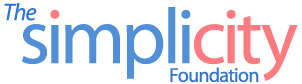

 |
|
|---|---|
Welcome to the Simplicity Foundation website! In the past decade, Wrocław and other cities in Lower Silesia saw a dramatic increase in foreigners of various nationalities. Some come for business, and some come for tourism; some people stay just for a short while, but some stay for a few years and longer. Today information about Wrocław and its surrounding areas is readily available in many languages, but still it is much less than what you can find in Polish, especially in the area that concerns everyday living and living well. We launched the Simplicity Foundation in the hope that we could help improve the circulation of information and equalize the availability of information in Polish and in other languages, so that non-Polish speaker (or reader) could know Wrocław and the surrounding areas in the same way as the Polish people do, and that they would feel more welcomed and more comfortable living. * * *
The primary aim of the Simplicity Foundation is to offer both technical and financial support for improving the internationalization of information and making the access to the local information simple. For example:
In addition, we also offer the support for events and projects that promote better understanding between diverse communities and cultures, such as:
|
|